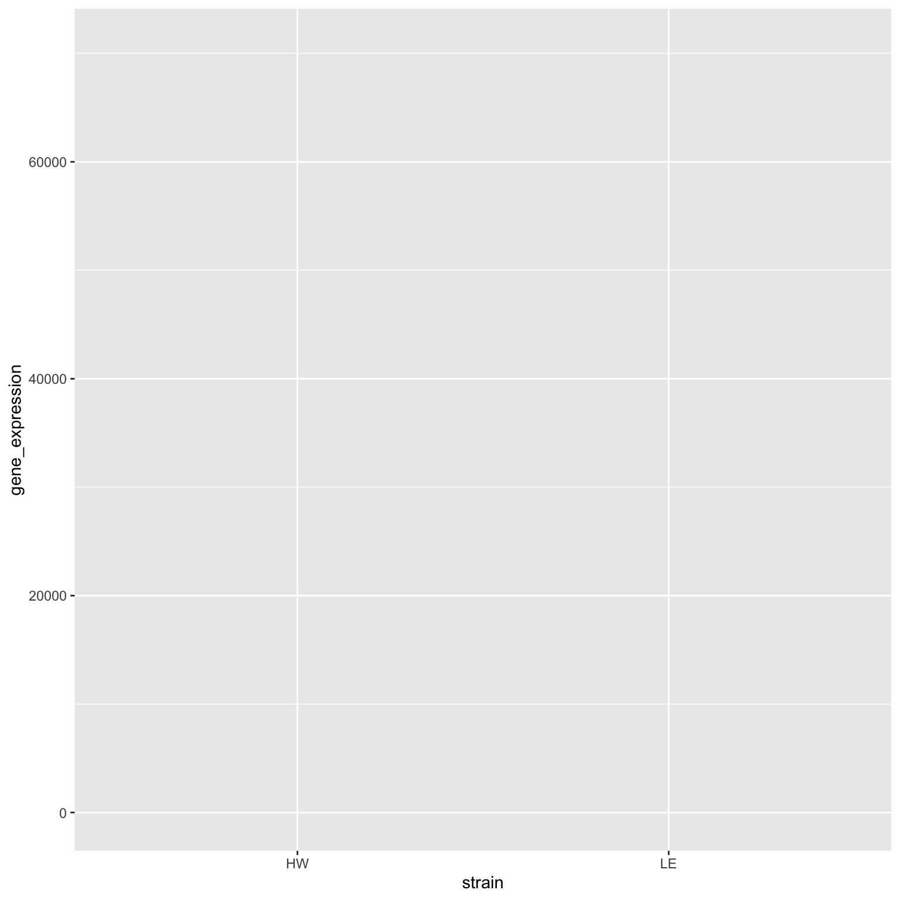
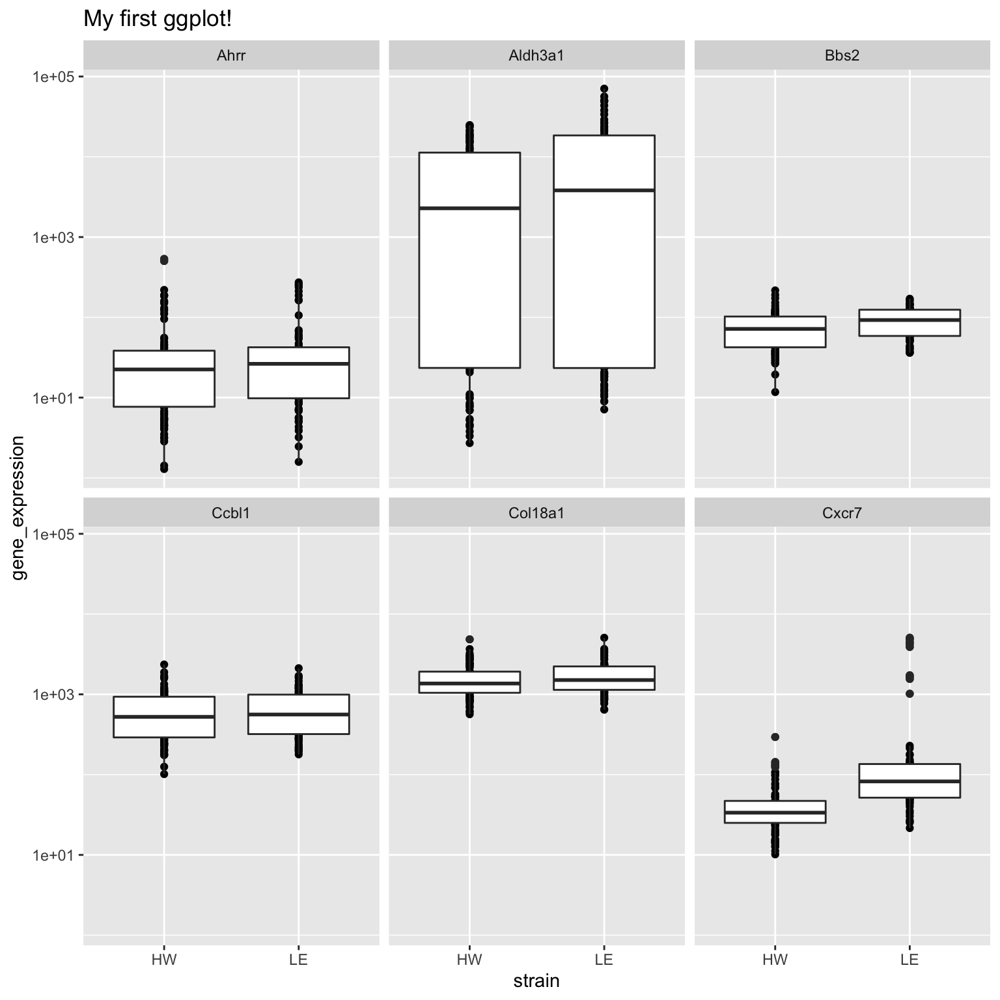
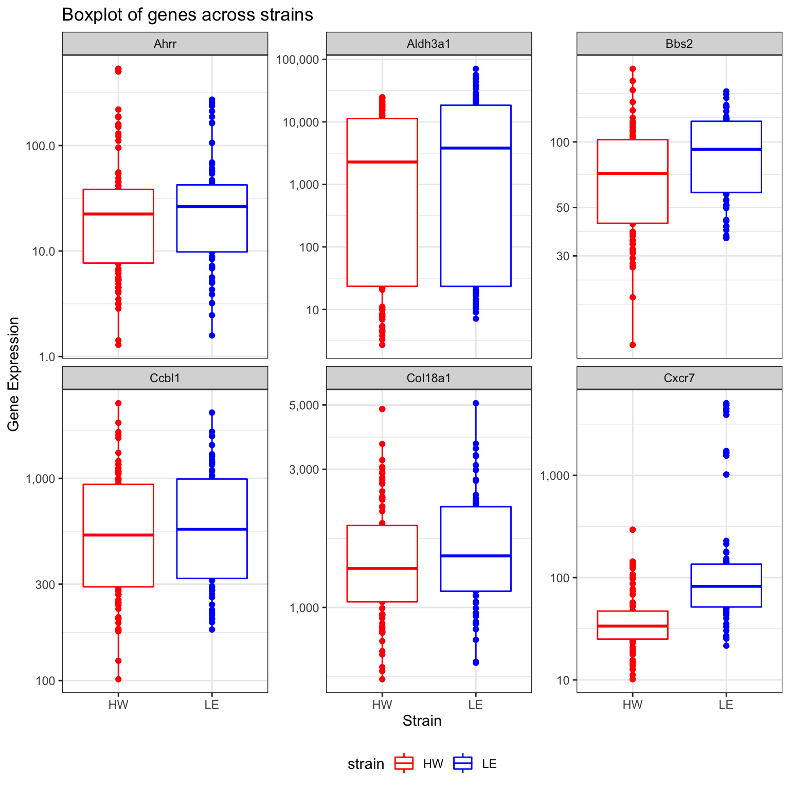

Session 2
Kevin Wang and Garth Tarr
2 Dec 2019
1 Learning outcomes of this session
- Join two data together using the
left_joinfunction - Making basic plots using
ggplot2: boxplots, histograms and scatter plots - Use
pivot_longerandpivot_widerto reshape data for visualisation purposes - Saving cleaned data for next stage of analysis
3 Loading cleaned sample data
Let’s begin today by reading in the csv file that we created in session 1.
## Parsed with column specification:
## cols(
## strain = col_character(),
## sample = col_character(),
## time = col_double(),
## dose = col_double()
## )4 Reading in gene expression data (top 6 rows)
Remember our aim for this workshop is to join the mice sample data with a mice gene expression data. session1_data is the sample data we have already cleaned yesterday, so we should now read in the gene expression data now.
This gene expression data was downloaded straight from the Gene Expression Omnibus and it was saved as a txt file. This txt file is more or less like a rectangular Excel sheet, with each row separated by a new line and each column is separated by a a single press of the “tab” button on the eyboard. Thus, we call this tab as the “delimiter” of this file. R understands this “tab” as \t.
The whole data has 54 rows, but for the sake of brevity, we will only read in the first 6 rows. We will also get rid of the first column of this raw data (the column of manufacturer’s ID).
raw_ge_data = read_delim(file = "data/GSE43251_NanoString_non-normalized.txt", delim = "\t", n_max = 6)## Parsed with column specification:
## cols(
## .default = col_double(),
## GB_ACC = col_character(),
## GENE_SYMBOL = col_character()
## )## See spec(...) for full column specifications.## Alternatively:
## raw_ge_data = read_tsv(file = "data/GSE43251_NanoString_non-normalized.txt", n_max = 6)
clean_ge_data = raw_ge_data %>%
dplyr::select(-1)
clean_ge_data## # A tibble: 6 x 155
## GENE_SYMBOL HW1 HW2 HW3 HW4 HW5 HW6 WW41 WW42
## <chr> <dbl> <dbl> <dbl> <dbl> <dbl> <dbl> <dbl> <dbl>
## 1 Ahrr 1.30e1 1.42e0 1.29 9.96e0 7.55e0 5.45e0 29.7 30.2
## 2 Aldh3a1 5.22e0 8.53e0 7.74 3.07e2 6.55e1 8.18e1 4194. 6712.
## 3 Bbs2 3.39e1 4.55e1 32.2 6.97e1 5.29e1 4.80e1 90.6 73.4
## 4 Ccbl1 2.37e2 2.43e2 175. 2.76e2 3.18e2 2.44e2 842. 704.
## 5 Cxcr7 2.35e1 2.70e1 15.5 6.83e1 3.40e1 4.03e1 42.0 34.3
## 6 Col18a1 1.69e3 1.92e3 918. 2.37e3 1.68e3 2.40e3 2149. 1551.
## # … with 146 more variables: WW45 <dbl>, WW46 <dbl>, WW47 <dbl>,
## # WW48 <dbl>, LE100 <dbl>, LE101 <dbl>, LE102 <dbl>, LE4D51 <dbl>,
## # LE4D53 <dbl>, LE4D56 <dbl>, WW37 <dbl>, WW38 <dbl>, WW39 <dbl>,
## # WW40 <dbl>, WW43 <dbl>, WW44 <dbl>, HW4D12 <dbl>, HW4D2 <dbl>,
## # HW4D6 <dbl>, LE4D57 <dbl>, LE52 <dbl>, LE53 <dbl>, LE54 <dbl>,
## # LE55 <dbl>, WW1 <dbl>, WW2 <dbl>, WW3 <dbl>, WW4 <dbl>, HW4D16 <dbl>,
## # HW4D20 <dbl>, LE10D32 <dbl>, LE10D27 <dbl>, LE10D28 <dbl>,
## # LE10D35 <dbl>, LE10D37 <dbl>, LE80 <dbl>, LE81 <dbl>, WW49 <dbl>,
## # WW50 <dbl>, WW51 <dbl>, HW4D3 <dbl>, HW4D4 <dbl>, LE82 <dbl>,
## # LE83 <dbl>, LE88 <dbl>, LE89 <dbl>, LE90 <dbl>, LE91 <dbl>,
## # WW25 <dbl>, WW26 <dbl>, WW27 <dbl>, WW28 <dbl>, HW10D10 <dbl>,
## # HW10D11 <dbl>, HW10D14 <dbl>, HW10D17 <dbl>, HW10D5 <dbl>, HW10 <dbl>,
## # HW4D15 <dbl>, HW4D19 <dbl>, HW4D7 <dbl>, HW7 <dbl>, HW8 <dbl>,
## # HW9 <dbl>, HW10D13 <dbl>, HW10D18 <dbl>, HW10D1 <dbl>, HW10D8 <dbl>,
## # HW10D9 <dbl>, LE64 <dbl>, LE65 <dbl>, LE66 <dbl>, LE67 <dbl>,
## # LE68 <dbl>, LE69 <dbl>, LE70 <dbl>, LE71 <dbl>, LE72 <dbl>,
## # LE73 <dbl>, LE74 <dbl>, LE75 <dbl>, LE76 <dbl>, LE77 <dbl>,
## # LE78 <dbl>, LE79 <dbl>, LE84 <dbl>, LE85 <dbl>, LE86 <dbl>,
## # WW10 <dbl>, WW11 <dbl>, WW12 <dbl>, WW13 <dbl>, WW14 <dbl>,
## # WW15 <dbl>, WW16 <dbl>, WW17 <dbl>, WW18 <dbl>, WW19 <dbl>, WW8 <dbl>,
## # WW9 <dbl>, …Let’s try to understand this data before we proceed to the next section. The first column of this data contains the gene symbols that was measured by the gene expression machine. From the second column onwards, each column records the gene expression measurement for one mouse and the sample ID of the mouse is the column name (i.e. HW1, HW2, etc.).
So how should we join these two data? If we just stack the two data together, there are no guarantees to say that we will have the right ordering of sample ID. In fact, if you try to just bind the two sample IDs together, R will complain about this.
## [1] 154## [1] 165## Warning in cbind(colnames(clean_ge_data)[-1], session1_data$sample): number
## of rows of result is not a multiple of vector length (arg 1)## [,1] [,2]
## [1,] "HW1" "HW1"
## [2,] "HW2" "HW2"
## [3,] "HW3" "HW3"
## [4,] "HW4" "HW4"
## [5,] "HW5" "HW5"
## [6,] "HW6" "HW6"
## [7,] "WW41" "WW45"
## [8,] "WW42" "WW46"
## [9,] "WW45" "WW47"
## [10,] "WW46" "WW48"
## [11,] "WW47" "WW41"
## [12,] "WW48" "WW42"
## [13,] "LE100" "WW43"
## [14,] "LE101" "WW44"
## [15,] "LE102" "WW37"
## [16,] "LE4D51" "WW38"
## [17,] "LE4D53" "WW39"
## [18,] "LE4D56" "WW40"
## [19,] "WW37" "WW1"
## [20,] "WW38" "WW2"
## [21,] "WW39" "WW3"
## [22,] "WW40" "WW4"
## [23,] "WW43" "WW49"
## [24,] "WW44" "WW50"
## [25,] "HW4D12" "WW51"
## [26,] "HW4D2" "WW5"
## [27,] "HW4D6" "WW6"
## [28,] "LE4D57" "WW7"
## [29,] "LE52" "WW8"
## [30,] "LE53" "WW10"
## [31,] "LE54" "WW11"
## [32,] "LE55" "WW12"
## [33,] "WW1" "WW9"
## [34,] "WW2" "WW13"
## [35,] "WW3" "WW14"
## [36,] "WW4" "WW15"
## [37,] "HW4D16" "WW16"
## [38,] "HW4D20" "WW17"
## [39,] "LE10D32" "WW18"
## [40,] "LE10D27" "WW19"
## [41,] "LE10D28" "WW20"
## [42,] "LE10D35" "WW21"
## [43,] "LE10D37" "WW22"
## [44,] "LE80" "WW23"
## [45,] "LE81" "WW24"
## [46,] "WW49" "WW25"
## [47,] "WW50" "WW26"
## [48,] "WW51" "WW27"
## [49,] "HW4D3" "WW28"
## [50,] "HW4D4" "WW29"
## [51,] "LE82" "WW30"
## [52,] "LE83" "WW31"
## [53,] "LE88" "WW32"
## [54,] "LE89" "WW33"
## [55,] "LE90" "WW34"
## [56,] "LE91" "WW35"
## [57,] "WW25" "WW36"
## [58,] "WW26" "HW4D12"
## [59,] "WW27" "HW4D16"
## [60,] "WW28" "HW4D2"
## [61,] "HW10D10" "HW4D20"
## [62,] "HW10D11" "HW4D6"
## [63,] "HW10D14" "HW4D15"
## [64,] "HW10D17" "HW4D19"
## [65,] "HW10D5" "HW4D3"
## [66,] "HW10" "HW4D4"
## [67,] "HW4D15" "HW4D7"
## [68,] "HW4D19" "HW10D10"
## [69,] "HW4D7" "HW10D11"
## [70,] "HW7" "HW10D14"
## [71,] "HW8" "HW10D17"
## [72,] "HW9" "HW10D5"
## [73,] "HW10D13" "HW10D1"
## [74,] "HW10D18" "HW10D13"
## [75,] "HW10D1" "HW10D18"
## [76,] "HW10D8" "HW10D8"
## [77,] "HW10D9" "HW10D9"
## [78,] "LE64" "HW10"
## [79,] "LE65" "HW7"
## [80,] "LE66" "HW8"
## [81,] "LE67" "HW9"
## [82,] "LE68" "HW11"
## [83,] "LE69" "HW12"
## [84,] "LE70" "HW13"
## [85,] "LE71" "HW14"
## [86,] "LE72" "LE96"
## [87,] "LE73" "LE97"
## [88,] "LE74" "LE98"
## [89,] "LE75" "LE99"
## [90,] "LE76" "LE92"
## [91,] "LE77" "LE93"
## [92,] "LE78" "LE94"
## [93,] "LE79" "LE95"
## [94,] "LE84" "LE88"
## [95,] "LE85" "LE89"
## [96,] "LE86" "LE90"
## [97,] "WW10" "LE91"
## [98,] "WW11" "LE100"
## [99,] "WW12" "LE101"
## [100,] "WW13" "LE102"
## [101,] "WW14" "LE52"
## [102,] "WW15" "LE53"
## [103,] "WW16" "LE54"
## [104,] "WW17" "LE55"
## [105,] "WW18" "LE56"
## [106,] "WW19" "LE57"
## [107,] "WW8" "LE58"
## [108,] "WW9" "LE59"
## [109,] "WW20" "LE60"
## [110,] "WW21" "LE61"
## [111,] "WW22" "LE62"
## [112,] "WW23" "LE63"
## [113,] "WW24" "LE64"
## [114,] "WW29" "LE65"
## [115,] "WW30" "LE66"
## [116,] "WW31" "LE67"
## [117,] "WW32" "LE68"
## [118,] "WW33" "LE69"
## [119,] "WW34" "LE70"
## [120,] "WW35" "LE71"
## [121,] "HW11" "LE72"
## [122,] "HW12" "LE73"
## [123,] "HW13" "LE74"
## [124,] "LE56" "LE75"
## [125,] "LE57" "LE76"
## [126,] "LE58" "LE77"
## [127,] "LE59" "LE78"
## [128,] "LE60" "LE79"
## [129,] "LE61" "LE80"
## [130,] "LE62" "LE81"
## [131,] "LE63" "LE82"
## [132,] "WW36" "LE83"
## [133,] "LE87" "LE84"
## [134,] "LE92" "LE85"
## [135,] "LE93" "LE86"
## [136,] "LE94" "LE87"
## [137,] "LE95" "LE4D39"
## [138,] "LE96" "LE4D41"
## [139,] "LE97" "LE4D42"
## [140,] "LE98" "LE4D44"
## [141,] "LE99" "LE4D51"
## [142,] "WW5" "LE4D53"
## [143,] "WW6" "LE4D54"
## [144,] "WW7" "LE4D56"
## [145,] "HW14" "LE4D57"
## [146,] "LE10D29" "LE4D50"
## [147,] "LE10D30" "LE4D52"
## [148,] "LE10D33" "LE4D55"
## [149,] "LE10D34" "LE4D58"
## [150,] "LE10D38" "LE10D21"
## [151,] "LE4D50" "LE10D22"
## [152,] "LE4D52" "LE10D23"
## [153,] "LE4D55" "LE10D24"
## [154,] "LE4D58" "LE10D25"
## [155,] "HW1" "LE10D26"
## [156,] "HW2" "LE10D27"
## [157,] "HW3" "LE10D28"
## [158,] "HW4" "LE10D32"
## [159,] "HW5" "LE10D35"
## [160,] "HW6" "LE10D37"
## [161,] "WW41" "LE10D29"
## [162,] "WW42" "LE10D30"
## [163,] "WW45" "LE10D33"
## [164,] "WW46" "LE10D34"
## [165,] "WW47" "LE10D38"This is where the left_join function from the dplyr package can help us.
5 left_join sample data
Let’s begin by looking at the samples that have gene expression data available. We will make a data.frame documenting the sample IDs and another column that indicates the availability of the gene expression data (which always have a value of "yes, since we extracted the ID from the gene expression data itself).
ge_sample_data = data.frame(
sample = colnames(clean_ge_data)[-1],
ge_data_available = "yes"
)
head(ge_sample_data)## sample ge_data_available
## 1 HW1 yes
## 2 HW2 yes
## 3 HW3 yes
## 4 HW4 yes
## 5 HW5 yes
## 6 HW6 yesNow we will apply the left_join function between the session1_data, the full sample data, and the ge_sample_data, which only contains the samples with gene expression information available. The sample column in both data serves as an “identifier” to match each mice in the session1_data to each mice in ge_sample_data. See below.
## Warning: Column `sample` joining character vector and factor, coercing into
## character vector## # A tibble: 165 x 5
## strain sample time dose ge_data_available
## <chr> <chr> <dbl> <dbl> <fct>
## 1 HW HW1 1.5 0 yes
## 2 HW HW2 1.5 0 yes
## 3 HW HW3 1.5 0 yes
## 4 HW HW4 1.5 100 yes
## 5 HW HW5 1.5 100 yes
## 6 HW HW6 1.5 100 yes
## 7 HW WW45 3 100 yes
## 8 HW WW46 3 100 yes
## 9 HW WW47 3 100 yes
## 10 HW WW48 3 100 yes
## # … with 155 more rowsThe resulted data has the same number of rows as session1_data, and this is no surprise because it is the first input into the function and hence the name. The by input specify which column should be used as the identifier.
Looking at this data seems to suggest that nothing has gone wrong in the first 10 rows. But if we apply a small sampling on the number of rows, we can see that there are indeed sample mismatching between the sample and the gene expression data. This makes our task of combining data more difficult. Because we only know how to combine two datasets through a identifier column. This is not an issue with the session1_data, but the challenge here is the gene expression data, which has all identifiers as the column names.
If only there is a way that we can grab the column names of the gene expression data into a column while preserving the gene expression values. That’d make things so much easier! Let’s learn about the pivot_longer function first before returning to this problem.

6 tidyr::pivot_longer the gene expression data
The pivot_longer function takes a “wide” data into a “long” data. We simply tell the function which column we want to preserve, in this case, it will be the gene symbols, because we still want to distinguish each genes for each of the samples after the pivot operation.
## # A tibble: 924 x 3
## GENE_SYMBOL name value
## <chr> <chr> <dbl>
## 1 Ahrr HW1 13.0
## 2 Ahrr HW2 1.42
## 3 Ahrr HW3 1.29
## 4 Ahrr HW4 9.96
## 5 Ahrr HW5 7.55
## 6 Ahrr HW6 5.45
## 7 Ahrr WW41 29.7
## 8 Ahrr WW42 30.2
## 9 Ahrr WW45 18.1
## 10 Ahrr WW46 22.4
## # … with 914 more rowsOf course, it is be better to give the new columns some informative names.
ge_data_long = clean_ge_data %>%
tidyr::pivot_longer(
cols = -GENE_SYMBOL,
names_to = "sample",
values_to = "gene_expression")
ge_data_long## # A tibble: 924 x 3
## GENE_SYMBOL sample gene_expression
## <chr> <chr> <dbl>
## 1 Ahrr HW1 13.0
## 2 Ahrr HW2 1.42
## 3 Ahrr HW3 1.29
## 4 Ahrr HW4 9.96
## 5 Ahrr HW5 7.55
## 6 Ahrr HW6 5.45
## 7 Ahrr WW41 29.7
## 8 Ahrr WW42 30.2
## 9 Ahrr WW45 18.1
## 10 Ahrr WW46 22.4
## # … with 914 more rowsPay attention to how this data still maintains its tidy structure but it is now in a better format to be left_join with the session1_data. This may look simple, but you should appreciate the thinking behind this process as it will be ever more important as your data gets more complex.
long_sample_ge_data = session1_data %>%
left_join(ge_data_long, by = "sample") %>%
dplyr::filter(!is.na(GENE_SYMBOL)) %>%
janitor::clean_names()
long_sample_ge_data## # A tibble: 924 x 6
## strain sample time dose gene_symbol gene_expression
## <chr> <chr> <dbl> <dbl> <chr> <dbl>
## 1 HW HW1 1.5 0 Ahrr 13.0
## 2 HW HW1 1.5 0 Aldh3a1 5.22
## 3 HW HW1 1.5 0 Bbs2 33.9
## 4 HW HW1 1.5 0 Ccbl1 237.
## 5 HW HW1 1.5 0 Cxcr7 23.5
## 6 HW HW1 1.5 0 Col18a1 1694.
## 7 HW HW2 1.5 0 Ahrr 1.42
## 8 HW HW2 1.5 0 Aldh3a1 8.53
## 9 HW HW2 1.5 0 Bbs2 45.5
## 10 HW HW2 1.5 0 Ccbl1 243.
## # … with 914 more rowsNow that we have a very nice and cleaned data, we are now in a good position to learn about visualisation.
7 ggplot2 visualisation
There are many plotting systems and packages out there, so why should we use this ggplot2 system?
The gg in ggplot2 stands for “grammar of graphics”. That means in order to produce a ggplot, a very strict set of coding structure must be followed. These restrictions are designed in such a way that you can always look at a ggplot and know exactly which characteristic of the plot comes from which column of the data. This is extremely important for the purpose of reproducibility.
The ggplot2 plotting system is based on a layered structure, which means the final plot can always be decompose into several layers. We will illustrate what this means now step-by-step.
Let’s say we want to draw a scatter plot of the strains and the gene expression. We will first begin with a data and pipe that into the ggplot() function. This will give us a blank canvas for plotting.
## # A tibble: 924 x 6
## strain sample time dose gene_symbol gene_expression
## <chr> <chr> <dbl> <dbl> <chr> <dbl>
## 1 HW HW1 1.5 0 Ahrr 13.0
## 2 HW HW1 1.5 0 Aldh3a1 5.22
## 3 HW HW1 1.5 0 Bbs2 33.9
## 4 HW HW1 1.5 0 Ccbl1 237.
## 5 HW HW1 1.5 0 Cxcr7 23.5
## 6 HW HW1 1.5 0 Col18a1 1694.
## 7 HW HW2 1.5 0 Ahrr 1.42
## 8 HW HW2 1.5 0 Aldh3a1 8.53
## 9 HW HW2 1.5 0 Bbs2 45.5
## 10 HW HW2 1.5 0 Ccbl1 243.
## # … with 914 more rowsNow is a good time to think about what are the components of a scatter plot?
- x-coordinates of points
- y-coordinates of points
- Actually placement of points
The first two components are referred to as “mapping” in ggplot. Because the x-coordinates should be stored as a column in the data.frame, so we will “map” this column to be a characteristic on our ggplot. Similary, the y-coordinates should also be a mapping. This is why we write our code in the following manner. Note, we are using the aes() function to wrap everything.

Even though we still have a blank canvas, but notice how the x and y axes are now labelled with the variables/columns in the data.frame. So what are we missing for a scatter plot? Actually putting the points on the canvas!
In ggplot2, a plot is always a combination of layers. We have now a layer of blank canvas with axes, we will want to draw on this canvas using geom_point() which places the actual points on the canvas based on the mappings we have already specified.

This is your first ggplot! Let’s give it a title!
long_sample_ge_data %>%
ggplot(aes(x = strain,
y = gene_expression)) +
geom_point() +
labs(title = "My first ggplot!")
We see that the scale of data points can be very different. This is due to some genes always tend to have a higher expression than others (due to biology). So it will be a good idea to make a plot for each gene instead. This means that we need to make this plot for each value in the gene_symbol column in our data.
long_sample_ge_data %>%
ggplot(aes(x = strain,
y = gene_expression)) +
geom_point() +
facet_wrap(~gene_symbol)
This plot shows that “Aldh3a1” is the main culprit for having a very different scale compared all other five genes.
One way to deal with this scaling is to use the logarithm scale. ggplot2 has a very convenient way to doing this.
long_sample_ge_data %>%
ggplot(aes(x = strain,
y = gene_expression)) +
geom_point() +
facet_wrap(~gene_symbol) +
scale_y_log10()
We now have the scatter plots on a good scale, and we can already see some interesting features from these plots. For example, the “Aldh3a1” gene seems to show off some differences between the two strains, and the “Bbs2” gene seems to have a different variance between the two strains.
So, how can we improve on this plot further?
We can layer plots of other features onto this! For example, boxplots.
long_sample_ge_data %>%
ggplot(aes(x = strain,
y = gene_expression)) +
geom_point() +
geom_boxplot() +
facet_wrap(~gene_symbol) +
scale_y_log10()
Now it is a good time to stop and think about what we did.
We started off with a data.frame and a blank canvas with the aim to make a scatter plot. We added aesthetic mappings onto our ggplot and evaluated the quality of our plot as we go along. Every time we identify deficiencies in our plot, we simply add more layers to the plot. This detective-work is what makes ggplot2 is so popular, because it is very flexible in handling new ideas and plotting aesthetics. But at the same time, every aesthetic of this plot can be traced back to a particular column in the data.frame.
There are so many functions and tricks that we can’t really go through in details. Here is a very helpful cheatsheet. And in general, the best way is to Google the plot that you want and copy the code that someone else already made.
long_sample_ge_data %>%
ggplot(aes(x = strain,
y = gene_expression)) +
geom_point() +
geom_boxplot() +
facet_wrap(~gene_symbol) +
scale_y_log10(labels = scales::comma)
Have a play with the following code. Try deleting components of the code to understand which aspect of the plot it was controlling
long_sample_ge_data %>%
ggplot(aes(x = strain,
y = gene_expression,
colour = strain)) +
geom_point() +
geom_boxplot() +
facet_wrap(~gene_symbol, scales = "free_y") +
scale_y_log10(labels = scales::comma) +
labs(x = "Strain",
y = "Gene Expression",
title = "Boxplot of genes across strains")
7.1 Histogram
We will now try to make a histogram of each gene.
Let’s begin with the question: what are the aesthetic mappings of a histogram?
- x-axis should be numerical values of gene expression
- y-axis should be either counts or density values of gene expression
Let’s try this out. For making a histogram, we need to use the geom_histogram() geometry.
## `stat_bin()` using `bins = 30`. Pick better value with `binwidth`.Here, we see the same scaling issue we saw with the boxplots above. Hence, we will try to apply the same functions to manipulate the plots, namely:
facet_wrapwhich creates a plot for each gene in small panels,scale_x_log10which plots the x-axis on the log10 scale
long_sample_ge_data %>%
ggplot(aes(x = gene_expression)) +
geom_histogram() +
facet_wrap(~gene_symbol) +
scale_x_log10(labels = scales::comma)## `stat_bin()` using `bins = 30`. Pick better value with `binwidth`.
This plot looks pretty good! We can see that some genes are unimodal while others are bimodal. This is an new characteristic of the data that we couldn’t observe from the boxplots above.
We can make the modality more obvious by imposing the density of each gene onto the histogram. Let’s try out the geom_density function then!
long_sample_ge_data %>%
ggplot(aes(x = gene_expression)) +
geom_histogram() +
geom_density() +
facet_wrap(~gene_symbol) +
scale_x_log10(labels = scales::comma)## `stat_bin()` using `bins = 30`. Pick better value with `binwidth`.
This doesn’t look quite right, so what happened?
If we pay attention to the y-axis of our ggplot so far, we see that it is count, which means that each of bin in the histograms is showing the number of observations in that interval. However, when we talk abotu density, that is on a very different scale to the number of counts.
So how can we make a density-based histogram?
Let’s think this logically: right now, the count of observation is being mapped to the y-axis (default of geom_histogram), and we need to overwrite this by making density to be mapped to the y-axis. So the answer would be adding an extra input of y = ..density.. into the aes() function. The reason that we can’t use y = density is because in that case ggplot will interpret this line of code as mapping a column named density from the data.frame to the plot - but such column does not exist. The .. is just a technical way that ggplot handles such problem which you don’t have to worry too much on the details about.
long_sample_ge_data %>%
ggplot(aes(x = gene_expression, y = ..density..)) +
geom_histogram() +
geom_density() +
facet_wrap(~gene_symbol, scales = "free") +
scale_x_log10(labels = scales::comma)## `stat_bin()` using `bins = 30`. Pick better value with `binwidth`.8 Plotting two genes against each other
Now, let’s consider how we could make a scatter plot of two genes, say the “Ahrrr” and the “Cxcr7” gene. So, let’s answer the question, what are the components of a scatter plot in this case?
- Ahrrr gene expression values on the x-axis
- Cxcr7 gene expression values on the y-axis
But if we look at the data.frame we are using for plotting, long_sample_ge_data, it has all the gene expression values mixed in that gene_symbol column. So we can’t effectively map the expression of only “Ahrrr” and “Cxcr7” to the x and y axes respectively.
## # A tibble: 924 x 6
## strain sample time dose gene_symbol gene_expression
## <chr> <chr> <dbl> <dbl> <chr> <dbl>
## 1 HW HW1 1.5 0 Ahrr 13.0
## 2 HW HW1 1.5 0 Aldh3a1 5.22
## 3 HW HW1 1.5 0 Bbs2 33.9
## 4 HW HW1 1.5 0 Ccbl1 237.
## 5 HW HW1 1.5 0 Cxcr7 23.5
## 6 HW HW1 1.5 0 Col18a1 1694.
## 7 HW HW2 1.5 0 Ahrr 1.42
## 8 HW HW2 1.5 0 Aldh3a1 8.53
## 9 HW HW2 1.5 0 Bbs2 45.5
## 10 HW HW2 1.5 0 Ccbl1 243.
## # … with 914 more rowsSo we need to think about how to separate out the gene expression values into distinct columns. You may realise this as to be exactly the opposite of the operation of pivot_longer. In the tidyr package, the tidyr::pivot_wider allows for this operation.
wide_sample_ge_data = long_sample_ge_data %>%
tidyr::pivot_wider(names_from = "gene_symbol",
values_from = "gene_expression")
wide_sample_ge_data## # A tibble: 154 x 10
## strain sample time dose Ahrr Aldh3a1 Bbs2 Ccbl1 Cxcr7 Col18a1
## <chr> <chr> <dbl> <dbl> <dbl> <dbl> <dbl> <dbl> <dbl> <dbl>
## 1 HW HW1 1.5 0 13.0 5.22 33.9 237. 23.5 1694.
## 2 HW HW2 1.5 0 1.42 8.53 45.5 243. 27.0 1918.
## 3 HW HW3 1.5 0 1.29 7.74 32.2 175. 15.5 918.
## 4 HW HW4 1.5 100 9.96 307. 69.7 276. 68.3 2369.
## 5 HW HW5 1.5 100 7.55 65.5 52.9 318. 34.0 1679.
## 6 HW HW6 1.5 100 5.45 81.8 48.0 244. 40.3 2397.
## 7 HW WW45 3 100 18.1 2929. 62.1 565. 37.5 1326.
## 8 HW WW46 3 100 22.4 1112. 74.1 524. 41.5 1151.
## 9 HW WW47 3 100 28.9 2282. 52.8 654. 74.7 1785.
## 10 HW WW48 3 100 7.69 2878. 42.3 525. 47.1 994.
## # … with 144 more rowsNow that we have each gene as a column, we can perform our familiar ggplot operations. Have a play with each of the layers below. Notice that we also added the colour of the strain as well as a new geometry, geom_smooth that allows for adding linear regression lines.
wide_sample_ge_data %>%
ggplot(aes(x = Ahrr,
y = Cxcr7,
colour = strain)) +
geom_point() +
geom_smooth(method = "lm") +
scale_x_log10(labels = scales::comma) +
scale_y_log10(labels = scales::comma)
9 Saving data
10 Extension
read_csv(file = "data/session3_data.csv") %>%
dplyr::filter(strain == "HW",
time == 1.5,
dose == 0) %>%
tidyr::pivot_longer(
cols = -c("strain", "sample", "time", "dose"),
names_to = "gene_symbol",
values_to = "gene_expression") %>%
# dplyr::mutate(gene_expression = log10(gene_expression)) %>%
tidyr::pivot_wider(
names_from = "sample",
values_from = "gene_expression") %>%
ggplot(aes(x = HW1, y = HW2)) +
geom_point() +
scale_x_log10() +
scale_y_log10() ## Parsed with column specification:
## cols(
## .default = col_double(),
## strain = col_character(),
## sample = col_character()
## )## See spec(...) for full column specifications.11 Session Info
## R version 3.6.1 (2019-07-05)
## Platform: x86_64-apple-darwin15.6.0 (64-bit)
## Running under: macOS Mojave 10.14.6
##
## Matrix products: default
## BLAS: /Library/Frameworks/R.framework/Versions/3.6/Resources/lib/libRblas.0.dylib
## LAPACK: /Library/Frameworks/R.framework/Versions/3.6/Resources/lib/libRlapack.dylib
##
## locale:
## [1] en_AU.UTF-8/en_AU.UTF-8/en_AU.UTF-8/C/en_AU.UTF-8/en_AU.UTF-8
##
## attached base packages:
## [1] stats graphics grDevices utils datasets methods base
##
## other attached packages:
## [1] visdat_0.5.3 readxl_1.3.1 janitor_1.2.0 forcats_0.4.0
## [5] stringr_1.4.0 dplyr_0.8.3 purrr_0.3.3 readr_1.3.1
## [9] tidyr_1.0.0 tibble_2.1.3 ggplot2_3.2.1 tidyverse_1.2.1
##
## loaded via a namespace (and not attached):
## [1] tidyselect_0.2.5 xfun_0.10 haven_2.2.0 lattice_0.20-38
## [5] snakecase_0.11.0 colorspace_1.4-1 vctrs_0.2.0 generics_0.0.2
## [9] htmltools_0.4.0 yaml_2.2.0 utf8_1.1.4 rlang_0.4.2
## [13] pillar_1.4.2 glue_1.3.1 withr_2.1.2 modelr_0.1.5
## [17] lifecycle_0.1.0 munsell_0.5.0 gtable_0.3.0 cellranger_1.1.0
## [21] rvest_0.3.4 evaluate_0.14 labeling_0.3 knitr_1.25
## [25] fansi_0.4.0 broom_0.5.2 Rcpp_1.0.3 scales_1.1.0
## [29] backports_1.1.5 jsonlite_1.6 farver_2.0.1 hms_0.5.2
## [33] digest_0.6.23 stringi_1.4.3 grid_3.6.1 cli_1.1.0
## [37] tools_3.6.1 magrittr_1.5 lazyeval_0.2.2 crayon_1.3.4
## [41] pkgconfig_2.0.3 zeallot_0.1.0 ellipsis_0.3.0 xml2_1.2.2
## [45] lubridate_1.7.4 assertthat_0.2.1 rmarkdown_1.16 httr_1.4.1
## [49] rstudioapi_0.10 R6_2.4.1 nlme_3.1-141 compiler_3.6.1